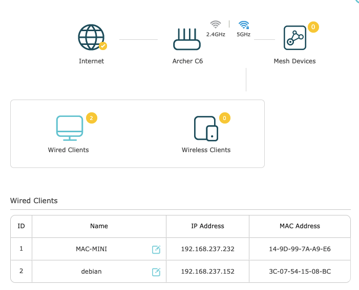
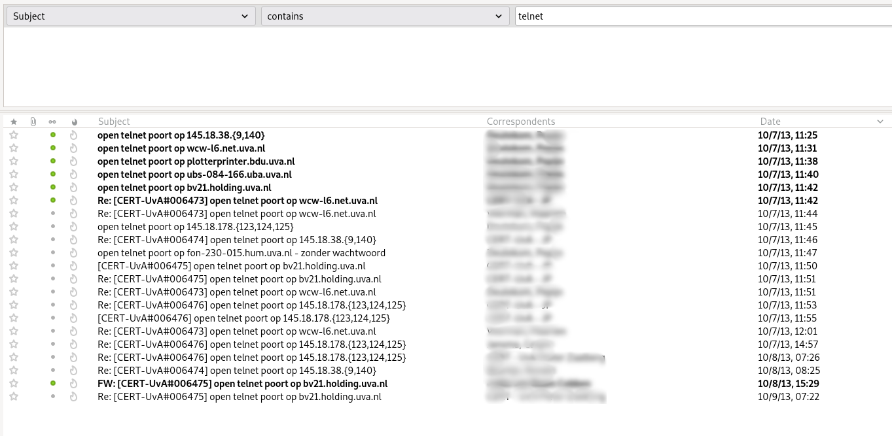
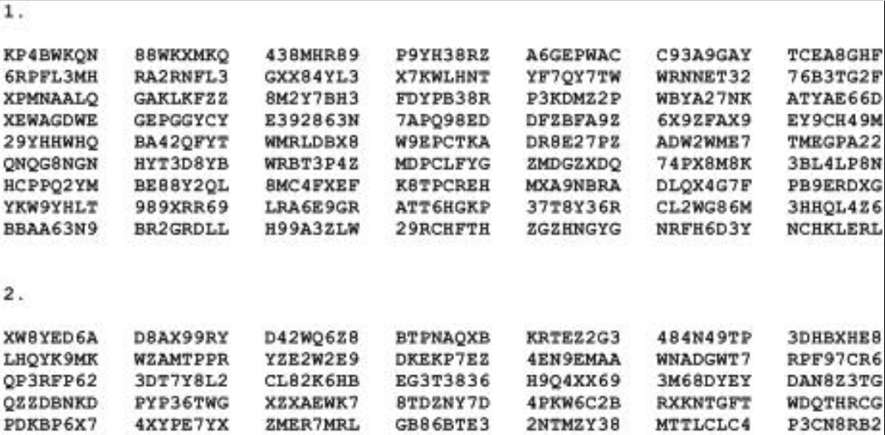
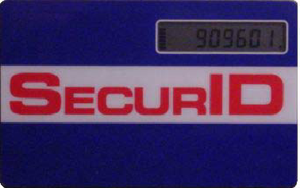
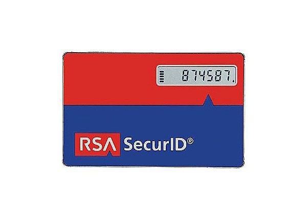
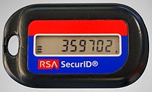
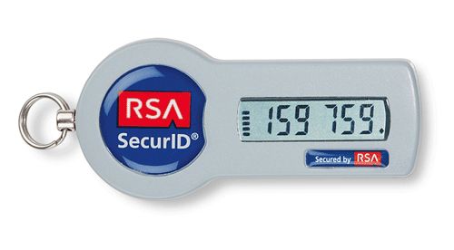
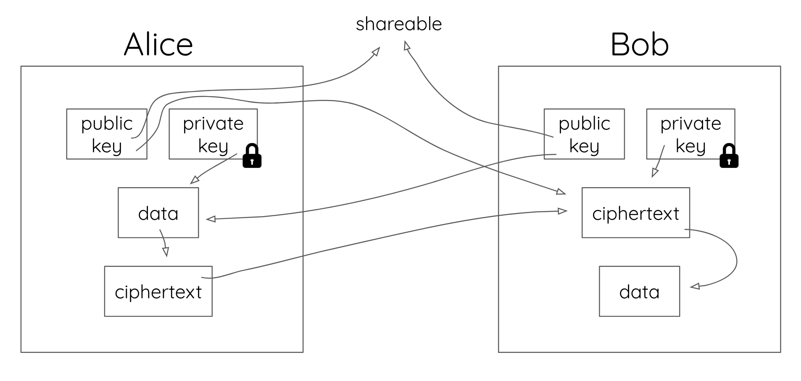

intro
why
- nov/dec 2021 'update' on several webapps
- "we" enabled SURFsecureID on tooling
- discussion
- yubikey purchase
who
colleagues, webapps and more
what / how
presentation + demos (github)
- remote access(aka login), (in)secure and history
- password / Two-factor authentication (2FA)
- 2FA focus; "OTP" & "public-key cryptography"
- circle back to yubikeys (and usage)
- +- 35 minutes 🤞
demos
- besides presentation, show stuff (hands-on)
- cli / shell (unix)
- terminal
- unix commands / scripts
- yubikey manager (desktop program)
- browser
demo setup
- client (os X...)
- server (debian 11)
- yubikeys & webcam
- program or browser
meet "the" setup

the beginning
- eduction (before work)
- remote access/login
- telnet & ftp, secure?
- (berkley) "r" commands, unix-only(rlogin, rsh & rcp, trust?)
first demos (2x)
telnet dead?
cert mail 2013

work
- Informatiseringcentrum UvA (dec 1995)
- remote access
- better security needed, how?
- let's go with: One Time Passwords == OTP
- some effort with; "OTP on paper" solution (not well received)
- commercial solution for OTP

SecurID
good old telnet
- no pam yet (password removed?)
- login via shell-entry; /usr/local/ace/prog/sdshell
- infra; 2x securId server (piethein & deruyter)




ftp
solving a "problem" (+-1997)
- custom solution, modify open source "wu-ftpd"
- OTP functionality ("linked" with securID lib)
- ftp user with restricted access (aka chroot)
- software packaging
labor intensive
no "otp" demo
- familiar (I guess)
- QR (mobile) apps with otp code
- icts HvA/UvA beheer vpn
other track
public-key cryptography
goal
a "trusted channel" to exchange 'messages'
Alice, Bob & Eve (evil)?
public / private keys

ssh
- rsh -> ssh, rcp -> scp
- password vs "public key" usage
- git uses "ssh"
- readonly via https://
- read-write with; git:// (<- == ssh)
ssh demo (2x)
Yubikey manager
gui desktop app (linux, os X, windows)
- Yubi security key (blue, fido)
- Yubikey 4, beheer VPN (OTP)
- Yubikey 5, surfconext SecurID (OTP + fido)
browser & "public key"
semi work / private accounts
alternative to "surfconext SecurID"?
after "surfconext"
- active/azure directory
- in webapp, admin task
- see also our gitlab (help)
please experiment with the yubikey
- try 2FA; both "otp" and "fido"
- learning React, hope to build a "fido login"
- maybe don't use "static password"... (or hide it)